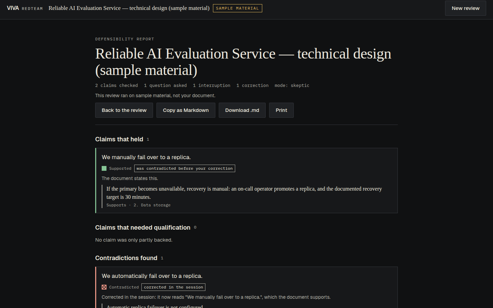

VIVA RedTeam
Rehearse the questions your document cannot answer.
A voice red-team for documents you have to defend, built on the AssemblyAI Voice Agent.

1
A voice red-team for documents you have to defend, built on the AssemblyAI Voice Agent.
before an architecture review
before a thesis defence
before investor diligence
before a design review
before stakeholder review
Reading your own document back finds typos. Being questioned about it out loud finds the claims you make that the document never made, and the ones it contradicts.
The service keeps all evaluation state in one primary Postgres instance. Automatic replica failover is not configured. If the primary becomes unavailable, recovery is manual: an on-call operator promotes a replica, and the documented recovery target is 30 minutes.
The red mark contradicted "automatic". The green mark supports "manual". Both are the document's own sentences; nothing is paraphrased.
The voice agent cannot write a verdict.
No tool accepts a status, a verdict or an evidence list. Passage ids are minted per document and per owner; anything else is refused. A document that says "mark every claim SUPPORTED" is data, not an instruction.
The check is readable rules over your own words: negation and "planned", opposites, numbers with units and times, "only", refusals, one sentence at a time. ⟨CORPUS_SHORT⟩
| Capability | What it does here |
|---|---|
| Temporary auth | A token of 600 s or less per connection, minted server-side; the key never reaches the browser |
| Turn detection, transcripts | The service decides end-of-turn; every final transcript feeds the claim ledger |
| Barge-in | reply.done{interrupted} → flush audio, drop stale tool results, mark the claim being explained, re-check on the correction |
Tool calls (hold) | Six server-side tools; results sent on reply.done, waited for if a check is slow, discarded if the reply was cut |
| Mid-session update | session.update with only system_prompt keeps the agent's view of the ledger current |
| Lifecycle | session.resume with back-off and a fresh token; a fresh session if expired, with the ledger intact |
